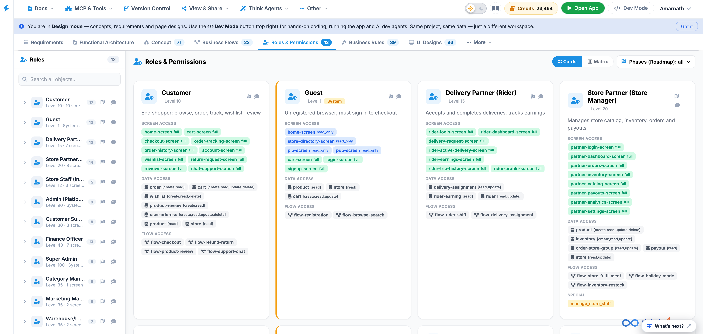
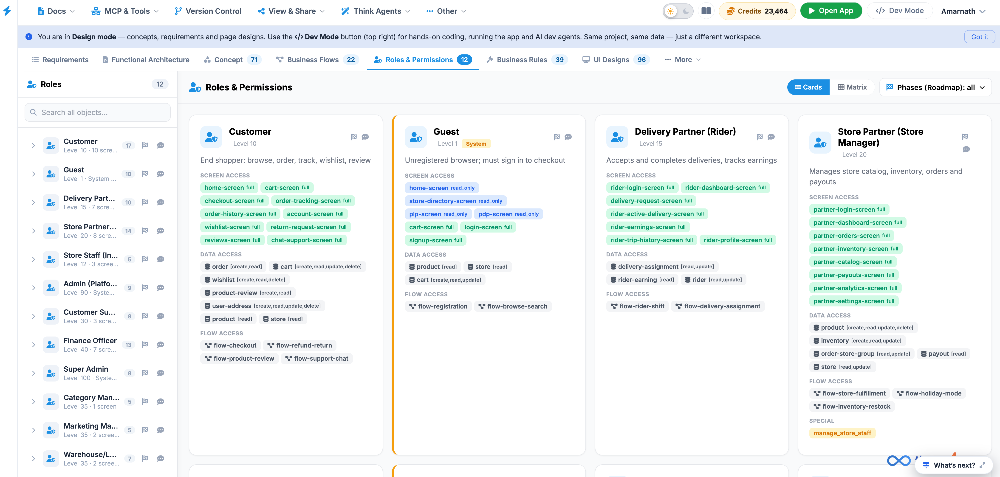
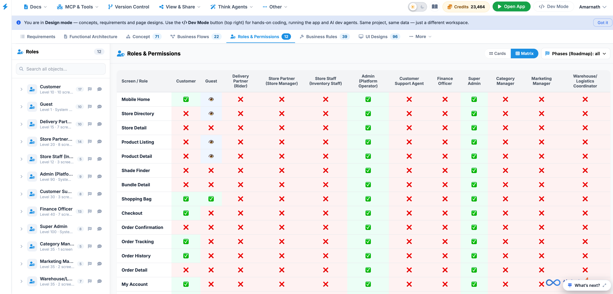
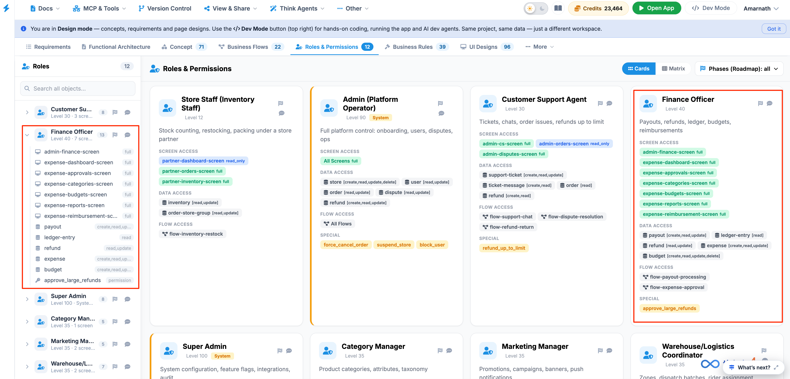

Roles & Permissions
The Roles & Permissions tab allows administrators to view and manage the roles, access levels, and permissions assigned to different types of users across the platform.
Each role defines what a user can see, access, and perform, helping ensure that users only have access to the screens, data, and workflows required for their responsibilities.

Roles & Permissions Overview
The Roles & Permissions page is organized into three main areas:
- Roles Sidebar – Used to locate and select a system role.
- Role Cards Canvas – Displays the access and permission details for the selected roles.
- Canvas Toolbar – Provides options for changing the display layout and filtering roles by roadmap phase.
1. Roles Sidebar
The Roles Sidebar displays the system roles available on the platform.
The sidebar contains 12 predefined roles, such as:
- Customer
- Guest
- Delivery Partner
- Store Partner
- Admin
- Finance Officer
Search for a Role
Use the Search option to quickly locate a specific role.
To search for a role:
- Click the Search field in the Roles Sidebar.
- Enter the name of the role you want to find.
- Select the role from the filtered list.
Selecting a role displays its corresponding access and permission details in the Role Cards Canvas.
2. Role Cards Canvas
The Role Cards Canvas provides a detailed overview of the permissions and access assigned to each role.
Each role is presented as a card containing the following information:
Role Details
The Role Details section identifies the role and its overall security classification.
It includes:
- Role Name – The name of the system role.
- Clearance Level – Indicates the role's access level, such as Level 10.
- Description – Provides a brief explanation of the role's responsibilities and purpose.
Screen Access
The Screen Access section identifies the screens or UI views that the role is authorized to access.
Access may be assigned using different permission scopes, such as:
- Full Access – The user can access and use all available functions on the screen.
- Read-Only – The user can view information but cannot make changes.
This section helps administrators understand which parts of the platform are visible and accessible to each role.
Data Access
The Data Access section defines what operations the role can perform on specific data or entities.
Permissions may include:
| Permission | Description |
|---|---|
| Create | Allows the user to add new records or data. |
| Read | Allows the user to view existing records or data. |
| Update | Allows the user to modify existing records or data. |
| Delete | Allows the user to remove records or data. |
For example, a role may have Read access to financial records but may not have permission to Update or Delete them.
Flow Access
The Flow Access section defines the business processes and workflow actions that the role is authorized to initiate or perform.
This may include:
- Starting a business process
- Approving or rejecting a request
- Moving an item to the next workflow stage
- Performing role-specific workflow actions
Flow permissions ensure that users can only perform actions appropriate to their assigned responsibilities.
3. Canvas Toolbar
The Canvas Toolbar, located in the upper-right corner of the page, provides controls for changing how role information is displayed.
Cards View
The Cards view displays each role as an individual card.
Use this view when you want to review the permissions and access details of roles individually.

Matrix View
The Matrix view presents role permissions in a structured matrix, making it easier to compare access across multiple roles.

Use this view when you need to:
- Compare permissions between roles
- Identify differences in access levels
- Review permission coverage across the platform
Phases (Roadmap) Filter
The Phases (Roadmap) filter allows you to filter the displayed roles or permissions according to their associated implementation or roadmap phase.
Use this filter when reviewing roles and permissions based on their planned rollout or development phase.

Understanding Role Permissions
A role's access is determined by the combination of its:
For example:
A Finance Officer may have Full Access to finance-related screens, Read/Update permissions for financial records, and permission to perform specific finance-related workflow actions.
This layered permission model helps maintain appropriate security, access control, and separation of responsibilities across the platform.
Best Practice: When reviewing or configuring roles and permissions:
- Grant users only the access required for their responsibilities.
- Use Read-Only access when users only need to view information.
- Review Create, Update, and Delete permissions carefully, as these allow users to modify platform data.
- Verify workflow permissions to ensure users can only perform authorized business actions.
- Use Matrix View when comparing permissions across multiple roles.
- Use the Phases (Roadmap) filter when reviewing permissions by implementation phase.
This version is more suitable for a client-facing User Manual because it explains not just what the components are, but also what users can do with them and when each view is useful.
If this is for your Think4Ever/Mintlify documentation, I can also make the rest of your manual follow this same structure and writing style consistently.